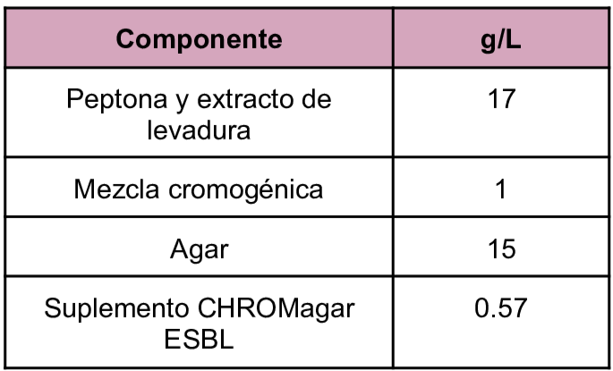
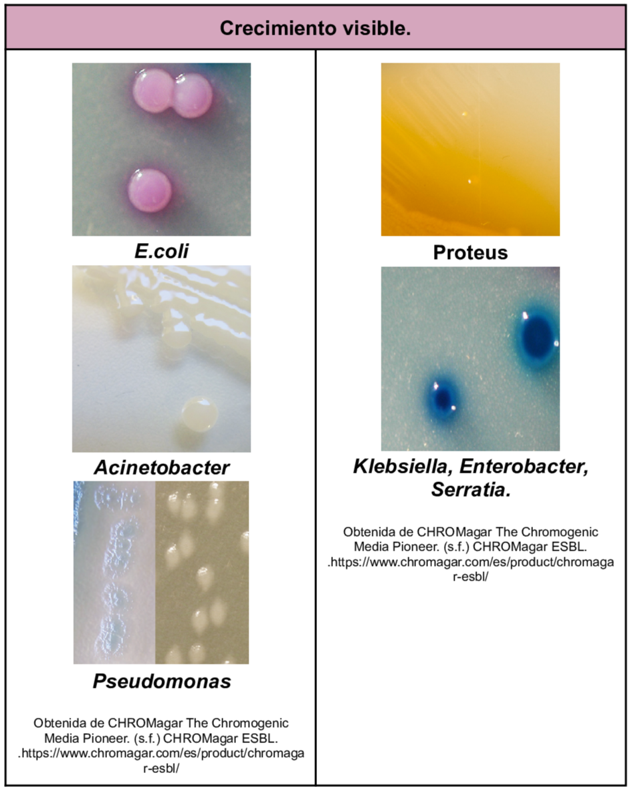

Medio selectivo y diferencial destinado a la detección directa de la colonización gastrointestinal con Enterobacteria resistentes a las betalactamasas de espectro extendido (BLSE). Se debe tener en cuenta que se debe realizar una identificación adicional, pruebas de susceptibilidad y tipificación de colonias sospechosas.
Composición

pH a 25°C 7.0±0.2
Resultados Posibles
El crecimiento varía dependiendo del microorganismo presente en la muestra.
- E.coli BLEE: Rosa oscuro a rojo
- Klebsiella. Enterobacter, Citrobacter BLEE: Azul metálico (+/- halo rojo)
- Proteus BLEE: Halo marrón
- Acinetobacter BLEE: Crema opacas
- Pseudomonas BLEE: Crema translúcido a azul

Referencias
Obtenida de CHROMagar The Chromogenic Media Pioneer. (s.f.) CHROMagar ESBL. .https://www.chromagar.com/es/product/chromagar-esbl/